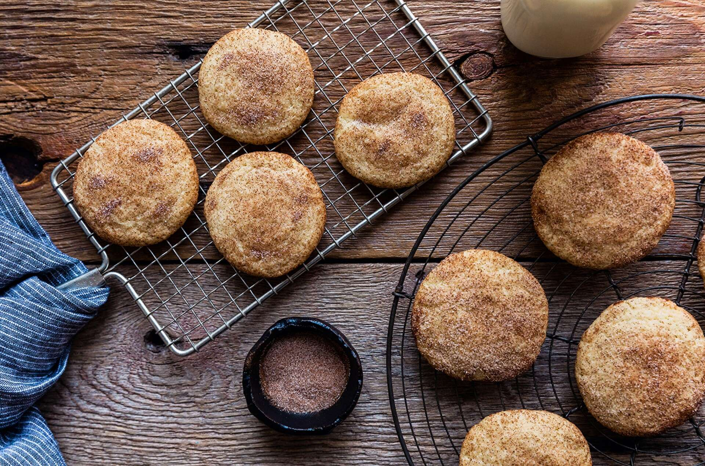

Snickerdoodles

Description
What's cinnamon-y, crispy-chewy, buttery through and through, and the perfect cookie for your morning or afternoon coffee or tea break? Why Snickerdoodles, of course!
We know you’ll love this gluten-free version of our Buttery Snickerdoodles recipe, a long-time favorite here on our site. Substituting Gluten-Free Measure for Measure Flour for the flour in that original yields flavor-packed cookies that are sure to be a hit with friends and family following a gluten-free diet. Enjoy!
Ingredients
Dough
- 8 TABLEspoons unsalted butter, at room temperature*
- 3/4 cup granulated sugar
- 1 large egg
- 1 TEAspoon vanilla extract
- 1/2 TEAspoon salt
- 1 TEAspoon baking powder
- 1 1/3 cups King Arthur Gluten-Free Measure for Measure Flour
Coating
- 2 TABLEspoons granulated sugar
- 1 1/2 TEAspoons cinnamon
Steps
- Preheat the oven to 375°F. Lightly grease (or line with parchment) two baking sheets.
- To make the cookies: Beat together the butter and sugar until smooth. Add the egg, beating until smooth. Beat in the vanilla, salt, and baking powder. Add the flour, mixing until totally incorporated.
- To make the coating: Shake together the sugar and cinnamon in a medium-sized zip-top plastic bag.
- Drop small (1"-diameter) balls of dough into the bag; a teaspoon cookie scoop works well here. Roll/toss the cookies in the cinnamon sugar until they're completely coated.
- Space the cookies at least 1 1/2" apart on the prepared baking sheets. Use a flat-bottom glass to flatten them to about 3/8" thick; they'll be about 1 1/2" in diameter.
- Bake the cookies for 8 minutes (for soft cookies) to 10 minutes (for crunchier cookies). Remove them from the oven, and cool them on the pan until they're firm enough to transfer to a rack to cool completely.
- Store any leftover cookies, well wrapped, at room temperature for several days; freeze for longer storage.